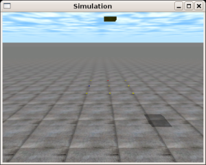
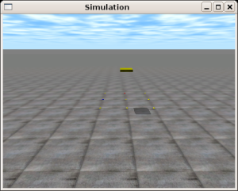
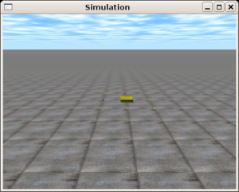

|
Cuaderno técnico 9: Cómo utilizar el Motor físico ODE. Ejemplos en C (I) |
|
|
En algunas aplicaciones resulta imprescindible disponer de un “motor físico” para calcular lo que está pasando en tu mundo virtual. Por ejemplo, es muy útil para la programación de juegos o la simulación de robots, como es mi caso. Existe un motor físico de calidad profesional que tiene una licencia libre y que es multiplataforma: el Open Dynamics Engine (ODE). En este cuaderno técnico se muestran tres ejemplos de utilización del ODE, escritos en C y para plataformas LINUX.
Los ejemplos que se muestran son los más sencillos posibles, los podríamos llamar los “hola mundo” del ODE :
Gravedad: Se crea un mundo virtual, se sitúa una caja a una cierta altura y se obtiene su posición en función del tiempo (es decir, cómo va cayendo). Es un ejemplo para consola. Este ejemplo se recomienda para probar si se tiene bien instalado el ODE.
Gravedad + colision: Mismo ejemplo anterior pero ampliado para detectar colisiones. Se sitúa un “suelo” y se repite el mismo experimentos: situar una caja a cierta altura para que caiga. Es también un ejemplo para consola.
Gravedad + colision + 3D: Ejemplo anterior pero con representación en 3D de manera que se puede ver cómo cae la caja y se puede cambiar la posición de la cámara para explorar el mundo virtual creado.
Para mi tesis doctoral necesitaba un motor físico para evaluar el movimiento de mis robots “gusano”. Quería recolectar datos y aplicar algoritmos genéticos para optimizar el movimiento de los robots. Al principio pensé en hacerme mi propio motor físico... pero descubrí el ODE. Aprendí a usar lo básico y me pareció una buena idea publicar algunos ejemplos sencillos que le pudiesen servir a otras personas.
Estos programas de ejemplo se han probado en una máquina con Debian/Etch. Para instalar el ODE sólo hay que hacer lo siguiente:
|
# apt-get install libode0c2 libode0c2-dev |
Si se quiere probar el ejemplo gravedad_colision-3D que utiliza representación en 3D utilizando OpenGL será necesario tener instalados, además, los siguientes paquetes:
* libx11-dev
* xlibmesa-gl-dev
Ejemplo “hola mundo” 1: Gravedad |
Explicación:
Es un programa para consola, que no utiliza la representación 3D. Se crea un mundo virtual y se sitúa en él una “caja” de una cierta masa y a una determinada altura. Como salida del programa se obtiene un vector con las sucesivas posiciones de la caja según transcurre el tiempo, es decir, como cae en el mundo virtual. No hay ningún suelo por lo que el objeto caerá indefinidamente...
La salida del programa es un script para Octave/Matlab que permite visualizar la gráfica de la caída.
Ejemplo de compilación:
Descargar el paquete gravedad-src.tgz , descomprimirlo, entrar en el directorio y compilar con make:
$ tar vzxf gravedad-src.tgz $ cd gravedad-src $ make g++ -c -o gravedad.o gravedad.cpp gcc -o gravedad gravedad.o -lode |
Ejemplo de utilización:
Ejecutar el programa redireccionando la salida a un fichero y ejecutar ese fichero desde octave/matlab:
$ ./gravedad > test.m $ octave test.m |
Al ejecutar el programa en octave se mostrará la gráfica de la caída de la caja:
|
|
Programa en C:
Aquí puedes echar un vistazo al programa: [Programa en C]
Ejemplo “hola mundo” 2: Gravedad y colisión |
Explicación:
Este ejemplo es una ampliación del anterior, al que se le han añadido detección de colisiones. Es también un programa para consola, sin representación en 3D.
En el mundo virtual creado se sitúan dos objetos: un plano infinito que hace de suelo y una “caja” situada a una cierta altura sobre el suelo. Al realizar la simulación, la caja caerá hasta que llegue al suelo, donde colisionará y se detendrá. La salida del programa es un programa para Octave/Matlab que permite visualizar la gráfica de la caída.
En el ODE hay que distinguir dos tipos de elementos. Uno son los cuerpos (bodies) que tienen una posición en el espacio, una orientación, una velodiad lineal y una velocidad angular. Los otros son las geometrías, que determinan la “forma” del cuerpo y son sobre las que actúa el sistema de detección de colisiones. Nuestros objetos, por tanto, tendrán dos componentes: el cuerpo y su geometría. Si no estamos interesados en la colisiones no hace falta utilizar las geometrías.
Para detectar las colisiones, es necesario crear un espacio de colisiones, donde situaremos todas las geometrías que queremos comprobar. Está implementado de esta manera en ODE para que la detección sea más rápida.
El ODE es un motor físico de carácter general, que permite a los desarrolladores extender sus funcionalidades. El qué hacer cuando hay una colisión es decisión del programador. Cuando se realizan juegos, puede interesar implementar una rutina de detección de colisiones propia. Sin embargo, en este ejemplo y en la mayoría de los ejemplos que yo he utilizado, lo único que se necesita es un “comportamiento normal”, similar a lo que ocurre en la realidad. Eso lo tenemos que programar nosotros y se incluye en este ejemplo. Lo interesante es que la rutina proporcionada es válida para la mayoría de los usos normales. No hay que re-escribirla para cada aplicación. Un simple “copy & paste” nos valdrá.
Ejemplo de compilación:
Descargar el paquete gravedad_colision-src.tgz , descomprimirlo, entrar en el directorio y compilar con make:
$ tar vzxf gravedad_colision-src.tgz $ cd gravedad_colision-src $ make g++ -c -o gravedad_colision.o gravedad_colision.cpp gcc -o gravedad_colision gravedad_colision.o -lode |
Ejemplo de utilización:
Ejecutar el programa redireccionando la salida a un fichero y ejecutar ese fichero desde octave/matlab:
$ ./gravedad_colision > test.m $ octave test.m |
Al ejecutar el programa en octave se mostrará la gráfica de la caída de la caja:
|
|
Se puede observar cómo la caja se detiene aproximadamente cuando llega a una altura de cero. En realidad se puede apreciar que llega a cero y que luego “sube” un poco. El ODE está diseñado no para obtener valores instantáneos exactos, sino para que el resultado global sea muy parecido a lo que ocurre en la realidad. El tiempo empleado en ODE es “discreto” por lo que se van acumulando errores durante la simulación. El propio motor de ODE los va corrigiendo, como en este caso. La “caja” tiene una cierta altura y su centro de gravedad no llegará a estar en la posición cero, sino un poco más elevado. En la primera caida, se acumula un error que suelo se va corrigiendo.
Si se realiza una simulación con “pasos” más pequeños, los resultados serán más exactos, pero se tardará más tiempo. Consultar la documentación para determinar cómo mejorar la precisión del simulador.
Programa en C:
Acceso al programa en C desde aquí: [Programa en C]
Ejemplo “hola mundo” 3: Gravedad, colisión y visualización en 3D |
Explicación:
Este ejemplo hace exactamente lo mismo que el anterior, pero la representación se hace en 3D, por lo que se puede ver cómo cae la caja y choca contra el suelo.
El creador del ODE ha hecho una librería muy sencilla para poder representar los mundos virtuales en 3D y a los objetos sencillos que se encuentran en su interior. Es una librería muy básica, pero para hacer simulaciones no muy complejas puede resultar muy útil. Es la libdrawstuff. Para hacer representaciones 3D más complejas podemos optar por utilizar directamente OpenGL.
La librería libdrawstuff dibuja un “suelo” con una textura, añade un cielo, crea la iluminación necesaria (sol) y sitúa una cámara. Además, con los botones del ratón podremos mover la cámara y su orientación para ver todo lo que está pasando en nuestro mundo virtual. Todo ello de una manera muy sencilla.
Inicialmente se configura y se le pasan las funciones que queremos que se invoquen cuando ocurran eventos, como un paso en la simulación o que se ha pulsado una tecla.
Ejemplo de compilación:
Para que compile correctamente será necesario instalar los paquetes ibx11-dev y xlibmesa-gl-dev. Descargar el paquete gravedad_colision-3D-bin.tgz , descomprimirlo, entrar en el directorio y compilar con make:
$ tar vzxf gravedad_colision-3D-src.tgz $ cd gravedad_colision-3D-src $ make g++ -c -o gravedad_colision-3D.o gravedad_colision-3D.cpp gcc -o gravedad_colision-3D gravedad_colision-3D.o libdrawstuff.a -L/usr/X11R6/lib -lX11 -lm -lGL -lGLU -lode |
Ejemplo de utilización:
Simplemente ejecutar el programa:
$./gravedad_colision-3D |
Se abrirá una ventana en la que se verá caer la caja:
|
 |
 |
 |
La simulación se puede ver en este vídeo: [Video]
En la consola aparecerá la siguiente información:
$ ./gravedad_colision-3D Simulation test environment v0.02 Ctrl-P : pause / unpause (or say `-pause' on command line). Ctrl-O : single step when paused. Ctrl-T : toggle textures (or say `-notex' on command line). Ctrl-S : toggle shadows (or say `-noshadow' on command line). Ctrl-V : print current viewpoint coordinates (x,y,z,h,p,r). Ctrl-W : write frames to ppm files: frame/frameNNN.ppm Ctrl-X : exit. Change the camera position by clicking + dragging in the window. Left button - pan and tilt. Right button - forward and sideways. Left + Right button (or middle button) - sideways and up. |
Es la información mostrada cuando se inicializa la librería libdrawstuff. Existen una serie de teclas predefinidas que se pueden usar durante la simulación. Una muy interesante es Control-P, con la que se realiza una pausa y al apretar Control-O se puede simular paso a paso, para ver lentamente lo que va ocurriendo.
También, con los botones del ratón se puede “navegar” por el mundo virtual, bien moviendo la cárama o bien cambiando su orientación.
Programa en C:
Acceso al programa en C desde aquí: [Programa en C]
Generando vídeos:
La librería libdrawstuff también permite generar imágenes con los diferentes “fotogramas” de la simulación, que luego se pueden agrupar formando un vídeo. Para ello necesitaremos tener instaladas los siguientes programas:
ppm2fli. Utilidad para convertir imágnes ppm a vídeo en formato Fli.
memcoder. Utilidad que viene con el mplayer y que permite pasar del formato .fli a .avi
Los pasos a seguir son los siguientes:
Desde el directorio donde se encuentre el ejemplo, crear un directorio con el nombre frame:
$ mk frame |
Ejecutar el ejemplo en modo pausa. Para ello arrancarla con el parámetro -pause:
$ ./gravedad_colision-3D -pause |
Pulsar la tecla Control-W para comenzar la generación de fotogramas
Pulsar Control-P para salir del modo pausa. Se comenzarán la simulación y por cada fotograma se guardará la imagen en un fichero dentro del directorio frame
Cuando se ha terminado de simular, salir del ejemplo
Ejecutar el script video.sh desde el mismo directorio donde se encuentra gravedad_colision-3D.
$ ./video.sh |
Al cabo de un rato se habrá generado el fichero test.avi con el vídeo de la simulación. Se encuentra dentro del directorio frame.
|
Fuentes |
|
Programa “hola mundo” 1: gravedad. |
|
|
Programa “hola mundo” 2: gravedad + colisiones. |
|
|
Programa “hola mundo” 3: gravedad + colisiones + 3D |
|
Ejectables |
|
Programa “hola mundo” gravedad. |
|
|
Programa “hola mundo” gravedad + colisiones. |
|
|
Programa “hola mundo” gravedad + colisiones + 3D. |
|
Scripts Octave/Matlab |
|
Salida del programa gravedad. Script para Octave/Matlab |
|
|
Salida del programa gravedad_colsiones. Script para Octave/Matlab |
|
Otros |
|
Video con la simulacion del programa gravedad_colision-3D. |
|
|
Scrip para generar un fichero de video con los fotogramas de la simulación |
ODE: Open Dynamics Engine.
PyODE: Utilización del ODE desde Python
Tao: acceso a diferentes utilidades gráficas y multimedia para .NET/Mono. Incluye acceso a las librerías de ODE.
|
|
|
Este proyecto tiene una licencia libre. Se permite su copia, modificación y distribución, bajo los términos de la licencia Creative commons |
A Javier de Lope, por descubrirme el ODE. ¡Gracias! ;-)
A Russell Smith, creador del ODE. Gracias a gente como él nuestra sociedad avanza, haciendo que el conocimiento esté disponible para todos.
30/Mayo/2006: Publicada primera versión de este cuaderno